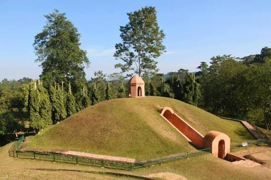
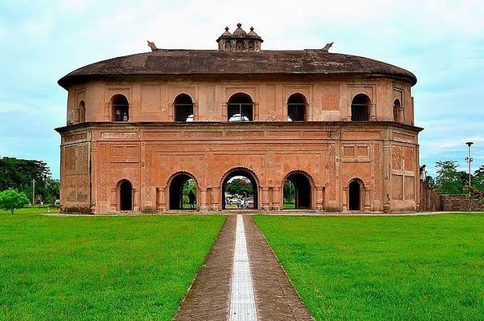
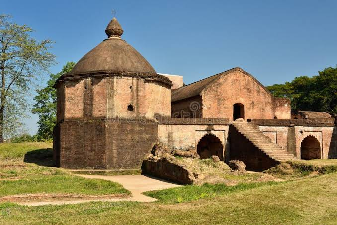
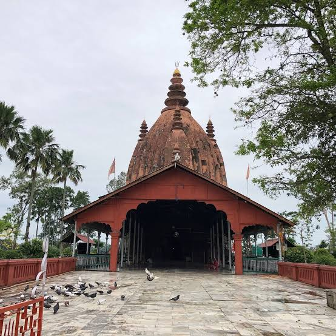
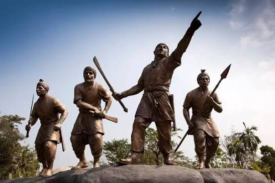

Ahom Explorer
Sail the Brahmaputra to Saraighat and climb the brick galleries of Rang Ghar. Discover the Ahoms — the Tai dynasty that ruled Assam for six centuries, turned back the Mughal Empire time and again, and left behind chronicles, forts, and burial mounds now recognized as a UNESCO World Heritage Site.
The Ahoms of Assam, Six Centuries of Self-Rule
The Ahom dynasty was founded in 1228 CE by Sukaphaa, a Tai prince who led his followers across the Patkai hills from present-day Myanmar into the Brahmaputra valley. Establishing his first capital at Charaideo, Sukaphaa began a process of settlement and alliance-building with the valley's existing communities that would grow, over generations, into one of medieval India's most enduring regional kingdoms.
Later Ahom rulers moved the capital first to Garhgaon and eventually to Rangpur, near modern Sivasagar, as the kingdom expanded across Upper Assam. What set the Ahoms apart was not conquest alone but administration: a labor-based system of governance that funded the state and its army without relying on the land-revenue bureaucracies used elsewhere in India — a structure resilient enough to help the kingdom repel repeated Mughal invasions and endure for nearly six hundred years.
🐉 The Ahom Legacy
- c. 1228–1826 CE — Nearly six centuries of continuous Ahom rule over Assam.
- Capitals at Charaideo, Garhgaon & Rangpur — Successive seats of the Ahom court as the kingdom expanded.
- The Paik System — A labor-based administration that sustained the state without a Mughal-style land-revenue bureaucracy.
- UNESCO Recognition — The Charaideo Maidams were inscribed as India's 43rd World Heritage Site in 2024.
Major Rulers of the Ahom Line
From the dynasty's founder to the king whose reign brought a golden age of temple and amphitheater building.
Sukaphaa (r. 1228–1268)
Founder of the Ahom dynasty. Led his followers across the Patkai hills into the Brahmaputra valley and established the first capital at Charaideo.
Suhungmung / Dihingia Raja (r. 1497–1539)
The dynasty's great early expander. Conquered the Chutiya kingdom in 1523 and the Kachari kingdom in 1526, and adopted the Hindu title Swarganarayan.
Pratap Singha / Susenghphaa (r. 1603–1641)
Strengthened the Paik administrative system and fortified the kingdom's defenses as the first serious Mughal probes into Assam began.
Gadadhar Singha (r. 1681–1696)
Restored central authority after a period of civil unrest and court instability, consolidating royal power ahead of the kingdom's cultural peak.
Rudra Singha (r. 1696–1714)
Presided over the Ahom cultural golden age — built the Rang Ghar amphitheater, patronized temple construction, and expanded royal ceremony and scholarship.
🏛️ Hallmarks of Ahom Heritage
- The Buranjis: An unbroken tradition of chronicle-keeping in the Ahom and Assamese languages, among the most detailed indigenous historical records in South Asia.
- The Paik System: Organized the male population into labor and military units instead of a cash land-tax, letting the kingdom field armies and build infrastructure without a Mughal-style bureaucracy.
- Battle of Saraighat (1671): General Lachit Borphukan's naval victory over the Mughal fleet on the Brahmaputra ended Mughal ambitions in Assam for good.
- Architectural Legacy: Rang Ghar, one of Asia's oldest amphitheaters; Talatal Ghar, a multi-storeyed palace-fort with underground tunnels; and the Charaideo Maidams, royal burial mounds inscribed by UNESCO in 2024.
- Religious Synthesis: A gradual shift from the indigenous Tai-Ahom faith toward patronage of Vaishnavite satras and Shaiva temples such as the Sivasagar Sivadol, alongside continued ancestor-worship traditions.
Six Centuries Without Conquest
Between 1615 and 1682, the Mughal Empire launched repeated campaigns into Assam — by some counts as many as seventeen — and every one ultimately failed to hold the territory. The Ahom kingdom's resilience rested on the Paik system, which let it mobilize soldiers and labor quickly without the fiscal machinery a conventional land-revenue state required.
The decisive moment came in 1671 at the Battle of Saraighat, when the Ahom general Lachit Borphukan defeated a much larger Mughal fleet under Ram Singh I on the Brahmaputra River, even as Lachit himself was gravely ill. His insistence on discipline and duty over favoritism during the battle's preparations made him a lasting symbol of civic responsibility in Assam — commemorated today through the Lachit Borphukan Best Cadet Gold Medal, awarded annually at India's National Defence Academy.
Chronology of the Ahom Dynasty
From Sukaphaa's crossing of the Patkai hills to the Treaty of Yandabo that ended Ahom sovereignty.
Founding of the Dynasty
Sukaphaa crosses the Patkai hills and establishes the Ahom kingdom, ruling from Charaideo.
Conquest of Chutiya & Kachari
Suhungmung defeats the neighboring Chutiya and Kachari kingdoms, greatly expanding Ahom territory.
The Mughal Invasions
The Mughal Empire launches repeated campaigns into Assam over several decades, none of which succeed in holding the territory.
Mir Jumla's Invasion
A Mughal army under Mir Jumla temporarily captures the Ahom capital at Garhgaon before disease and resistance force a withdrawal.
Battle of Saraighat
General Lachit Borphukan defeats the Mughal fleet under Ram Singh I on the Brahmaputra, ending Mughal ambitions in Assam.
Rudra Singha's Golden Age
Rudra Singha's reign brings a flourishing of temple and amphitheater building, including the construction of Rang Ghar.
The Moamoria Rebellion
A prolonged popular uprising weakens central Ahom authority and drains the kingdom's resources and stability.
Burmese Invasions & Treaty of Yandabo
Burmese invasions devastate Assam; the 1826 Treaty of Yandabo cedes the region to the British East India Company, ending Ahom sovereignty.
Forts, Temples & Chronicles of the Ahoms
A glimpse at the monuments, records, and legends associated with the Ahom dynasty of Assam.





📚 References & Further Reading
- Gait, Edward A. (1906). A History of Assam.
- Barpujari, H. K. (ed.) (1990). The Comprehensive History of Assam. Publication Board Assam.
- Encyclopaedia Britannica. Ahom Dynasty.
- Archaeological Survey of India. Monument records: Rang Ghar, Talatal Ghar, and the Charaideo Maidams.
- UNESCO World Heritage Centre (2024). Moidams – The Mound-Burial System of the Ahom Dynasty — inscription record.